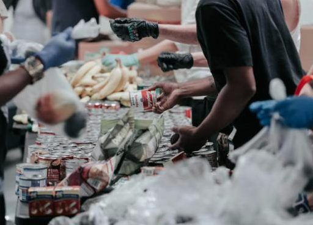

Food Banks & Food Access Sample report
Three weeks on the air for a neighborhood food pantry
A 30-second ad told families nearby when the pantry is open and that no paperwork is needed at the door.
- 38,000times the ad played
- 12,400local listeners reached
- 27new families at the pantry